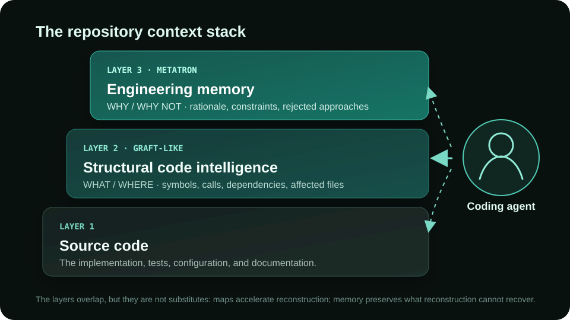

Graft, Metatron, and the two kinds of context coding agents need
Graft helps an agent reconstruct what a codebase contains. Metatron helps an agent inherit what previous engineers learned. They address the same recurring cost — agents starting cold — but they preserve different kinds of context.
Source note: I reviewed Graft 0.17.0 at
05760b0,
Metatron 0.13.0 at
8cd80db,
and both projects' current READMEs, code, examples, and published benchmark material on September 6, 2026.
Graft moves quickly; follow the linked README for the latest feature and benchmark claims.
Two projects, one shared observation
Every fresh coding-agent session pays an onboarding tax. The agent greps for a name, opens a file, follows an import, finds a caller, backs out, and tries another path. Some of that exploration is necessary. Much of it reconstructs facts that a previous session — or a teammate — already reconstructed.
Graft and Metatron both begin there: repository context should survive longer than one agent run. But “context” is doing too much work in that sentence. A map of the current implementation and a record of the team's engineering judgment are both context, in the same way that a street map and a local's warning about a flood-prone road are both navigation. One tells you what is there. The other tells you what happened before.
Metatron is primarily WHY / WHY NOT: rationale, constraints, rejected approaches, lessons, conventions.
What Graft is solving
Graft is unusually serious about structural code intelligence. A plain
graft build uses tree-sitter to produce a per-symbol wiring graph and
per-file cards. The graph connects functions, classes, calls, imports, inheritance,
and implementations. Its query surface turns that structure into practical agent
operations: find relevant code, show a file's API without its bodies, trace callers
and dependencies, search by enclosing symbol, build a token-budgeted repository
map, and calculate the blast radius of a diff. An optional LSP layer adds
compiler-resolved edges where static syntax is not enough.
The optional --deep build adds model-written file and symbol summaries,
concept nodes, and small “crux” excerpts containing the lines that carry the logic.
Sources are content-hashed; structural refreshes track the working tree, including
uncommitted changes. The generated graph is plain markdown and JSON, so an agent can
use its ordinary file-reading habits rather than depending on a proprietary search
service. Graft can also expose the same capabilities as MCP tools.
That is a strong answer to a real problem. A call graph can tell an agent that an authorization helper has twelve callers. A repository map can reveal that a small file is a highly connected hub. Blast-radius analysis can keep a one-file patch from ignoring four siblings. These are exactly the situations where naive grep-and-open exploration is slow and brittle.
Graft also publishes a repository-specific PocketBase evaluation: across ten architecture questions and five implementation tasks, both arms touched the same files as the maintainers on all five implementations, while the Graft arm used 21% less cost and 14% less wall-clock time. “Same files” is a localization proxy rather than a test-suite verdict, but it is well matched to Graft's navigation claim.
What Metatron is solving
Metatron stores a different unit: a reviewed engineering decision. Each decision
has a pattern, scope, rationale, confidence, and source references. The default
files-first mode keeps those decisions as markdown under context/, next
to the code. An agent is instructed to consult them before planning and to record
durable lessons it discovers while working.
The lifecycle is roughly:
consult → work → discover → propose → review → canonical decision
With the default pull-request review gate, an agent writes the proposed decision on
its working branch and human review of the PR is the curation act. Teams that want a
separate queue can stage it under context/candidate/ before promotion.
Metatron's optional MCP mode adds relevance-ranked serving, feedback, and an explicit
candidate store, but the invariant is the same: nothing self-promotes into canonical
knowledge.
Metatron can bootstrap candidates from structural signals and Git history, but that is not the whole system. The important part is the write-back loop. An agent can discover a constraint during a failed implementation, record it, and offer it for review so that a future agent does not need to repeat the failure.
Recoverable context and non-recoverable context
Here is the conceptual center of the comparison. Most of Graft's core facts are recoverable from the current repository. Given enough time, tokens, and tool calls, a sufficiently capable agent can parse the symbols, follow the imports, read the bodies, inspect the tests, and reconstruct much of the architecture. Graft makes that reconstruction faster, cheaper, and more dependable. “Recoverable” does not mean “free.”
Many Metatron decisions are not recoverable from the current tree because the missing information is historical or counterfactual. The code tells you which approach survived. It may not tell you which plausible alternatives were tried, which production incident killed them, or which constraint the team expects every future change to preserve.
Do not move JWT validation into every service. We tried that previously and
it caused authorization semantics to diverge across services. Keep validation
at the gateway.An AST or call graph can show that JWT validation happens at the gateway today. It can show every service depending on the authenticated request. A generated summary can accurately describe the current design. None of those artifacts necessarily contains the causal statement: validation used to be distributed, the semantics diverged, and the team deliberately centralized it. If that history never made it into code, tests, a commit message, or documentation, model capability cannot infer it reliably. It can only guess.
The boundary is not perfectly clean. Graft's node format includes a human Notes
region that survives regeneration, so teams can add knowledge beyond generated
summaries. Metatron's ingest also starts from recoverable structural and Git
signals. The distinction is about each project's center of gravity and default
lifecycle: Graft treats its generated graft/ graph as a local,
gitignored, regenerable cache; Metatron treats reviewed decisions as shared,
Git-tracked source material.
What happens as coding models get stronger?
A tempting argument says better models will make code maps unnecessary. I do not think the evidence supports it. We need to separate two outcomes:
- Correctness: does the extra context help the agent produce the right answer or patch?
- Efficiency: does it reduce tokens, tool calls, API requests, wall-clock time, or cost?
A strong model can reach a correctness ceiling while still wasting work getting there. Graft's own published results are a useful example:
| Graft benchmark | Correctness | Efficiency reported by Graft |
|---|---|---|
| Controlled question benchmark 162 runs, two repos, Claude Sonnet 5 |
Cold 93% Graft push 93% |
42% fewer tokens, 46% fewer tool calls, 60% less latency, 32% lower mean cost per task |
| SWE-bench Verified subset 50 instances, Claude Sonnet 5, official grader |
Cold 27/50 (54%) Graft 33/50 (66%) |
23% fewer tokens, 25% fewer tool calls, 24% fewer API requests, 32% less wall-clock time |
In the first benchmark, correctness was already 93%, yet the push configuration removed a large share of the exploration cost. In the lower-baseline SWE-bench run, Graft reported both a 12-point correctness gain and efficiency gains. That is consistent with the idea that correctness gains shrink near a ceiling while efficiency gains remain. It does not prove it: the task sets, graders, and conditions differ, the controlled benchmark used a model judge, and the SWE-bench run covered 50 instances. Graft's README also notes that its SWE-bench efficiency totals are calculated on instances both arms resolved for a like-for-like comparison.
Metatron's own research reaches a similarly qualified boundary. Our Context Inheritance paper, accepted at the forthcoming AgenticDev 2026 workshop, co-located with ASE, reports that blind frontier-authored context raised an 8B local model's gold-file localization from 21.1% to 47.2% on topic-matched tasks (+26.1 percentage points, p<0.0001). The same executor's own lessons moved localization by 0.0 points. Resolve stayed low and did not improve significantly at that tier, so this is a localization result, not a general claim that the context doubled bug-fixing ability.
On constraint-sharing tasks, the frontier lifecycle moved resolve from 58.3% to 72.9%, but that result was directional rather than confirmed after the registered multiple-comparison correction (raw p=0.041; Holm-adjusted p=0.081). On a broader 88-instance sample, the same frontier executor already resolved 90.9% without context and no delivery condition beat it. That is evidence of a possible task-specific ceiling, not a universal law about models or memory.
The paper evaluated the Repository Context Layer architecture in a minimal harness, not Metatron's product end to end, and it did not test Metatron's automatic ingest. The protocol, transcripts, raw outcomes, and verification scripts are available in the public replication artifact.
Why Git matters
Both projects use files and both understand Git, but Git plays a different role.
Graft uses Git to decide which working-tree files are visible and keeps its graph
fresh as those files change. By default, graft build adds the generated
graft/ directory to .gitignore; teammates regenerate it
locally. That is sensible for derived structural state. A stale map should be
rebuilt from the source of truth.
In Metatron, the decision files themselves are source of truth. Git supplies provenance, review, branching, blame, rollback, and temporal alignment with the code. If a team changes the JWT rule, the context diff can land with the code diff. If the change was wrong, both can be reverted. If two branches disagree, the disagreement is visible rather than silently resolved by regeneration.
This is why the human gate matters. Persistent context is standing instruction to future agents. A plausible but wrong code summary is inconvenient; a plausible but wrong rule that every future agent obeys is institutional damage. Metatron makes review part of the storage model because durable knowledge requires an owner and an audit trail.
Why Graft and Metatron may belong together
Once the recoverable/non-recoverable distinction is explicit, the projects stop looking like substitutes. An agent preparing to change authentication needs both a current map of the gateway's callers and the historical warning against distributing validation. One cannot replace the other.

The ideal context stack may therefore have three layers:
- Source code: the executable ground truth.
- Structural code intelligence: a Graft-like layer for symbols, calls, dependencies, architecture, repository navigation, and blast radius.
- Engineering memory: a Metatron-like layer for rationale, constraints, rejected alternatives, edge cases, and reviewed lessons.
The structural layer reduces the price of understanding the present. The memory layer makes parts of the past available at all.
The experiment I would like to see
The clean test is a factorial study, not two unrelated benchmark percentages placed side by side. Run the same tasks, model, scaffold, tools, budget, and grading under four conditions:
1. Cold baseline
2. Graft
3. Metatron
4. Graft + MetatronRepeat the matrix across several model capability levels. Measure correctness, tokens, tool calls, API requests, latency, and cost. Include ordinary bug fixing, but also tasks where success depends on a recurring team constraint or a previously rejected approach — cases that test engineering memory rather than repository localization alone.
My hypothesis is an interaction, not a winner. Structural context should help most on large, unfamiliar, cross-file changes and may retain efficiency gains after its correctness effect narrows. Reviewed engineering memory should help most when the decisive fact is historical, conventional, or absent from the current code. The combined arm should show whether faster navigation makes the right decision easier to apply, or whether the two contexts sometimes compete for a finite attention budget. Any of those outcomes would teach us more than “tool A scored X and tool B scored Y” across incomparable experiments.
FAQ
What is the main difference between Graft and Metatron?
Graft primarily derives structural intelligence from the current repository.
Metatron primarily preserves reviewed engineering decisions. In shorthand: Graft
answers WHAT / WHERE; Metatron answers WHY / WHY NOT.
Do stronger coding models make Graft-like tools unnecessary?
No. Correctness gains may narrow on tasks a model already solves, while token,
tool-call, and latency gains remain valuable. Graft's controlled benchmark is a
concrete example: equal 93% correctness with substantially lower reported usage.
Can the projects be used together?
Conceptually, yes. Their default artifacts and integration mechanisms differ, but a
coding agent can benefit from a current structural map and a reviewed decision
history in the same repository.
Graft asks why an agent should rediscover the structure of a repository on every task. Metatron asks the next question: why should it rediscover the team's engineering knowledge?
A capable agent can always spend more effort reading code. It cannot read an argument nobody saved.